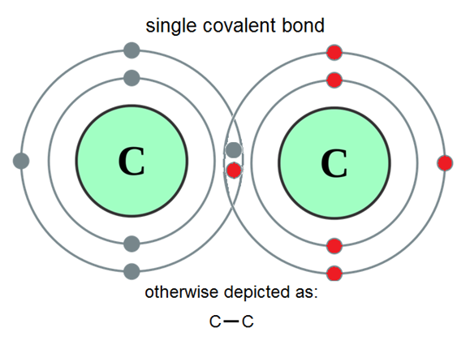
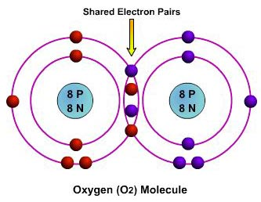
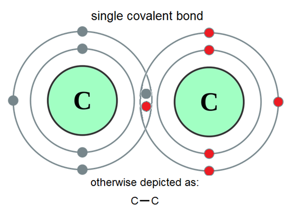
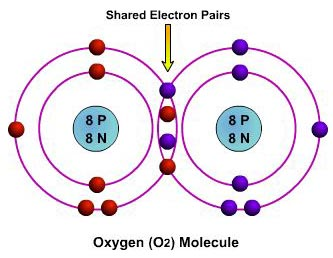

Nonpolar Covalence
Nonpolar covalence is simply a covalent bond in which both atoms have an equal electronegativity, resulting in an equal sharing of electron(s) between the two nuclei.
Much of nonpolar covalence has already been discussed in the Covalent Bonds section. Nonpolar covalent bonds result in long molecular chains that may be extremely strong. This strength in nonpolar covalence is shown in diamond, in which carbon atoms
bond with four neighboring carbon atoms, resulting in the hardest naturally-occuring element. An important thing to note of nonpolar covalent bonds is that the molecules they form
cannot be classified as an electric dipole, and instead have no charge. This
results in a lack of intermolecular forces between molecules that have bonded without polarity. This stability of charge can be achieved through polar covalent bonds, whose charge evens out
so that there is a lack of a distinct dipole in a molecule.
 

Top-bottom: The aftermath of the nonpolar covalent bonding of: hydrogen, carbon, and oxygen.


Top-bottom: The aftermath of the nonpolar covalent bonding of: hydrogen, carbon, and oxygen.
Oxygen
Oxygen is necessary to sustain life on Earth by being used as an agent in cellular respiration. 55% of commercially produced oxygen is used in blast furnaces to smelt iron ore into steel. Compressed
oxygen gas is used in life-support applications, and in sustaining underwater submersibles and scuba divers.
Oxygen is produced naturally by the light-driven splitting of water during photosynthesis. In the industrial context, air is distilled into its basic components, resulting in the production of
liquid oxygen. Zeolite molecular sieves are also used to absorb the nitrogen in air, resulting in 90-93% pure oxygen gas.
When infants are exposed to high oxygen concentrations, blindness may occur. The practice of using high-oxygenated incubators has since been discontinued. Oxygen toxicity can cause seizures and convulsions
at certain pressures and concentrations. Breathing 100% pure oxygen causes seizures at merely 6 metres underwater.